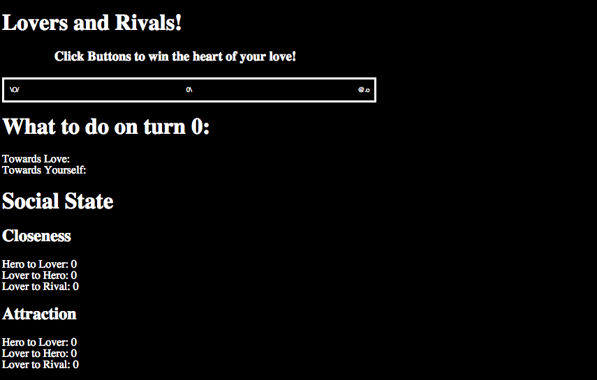
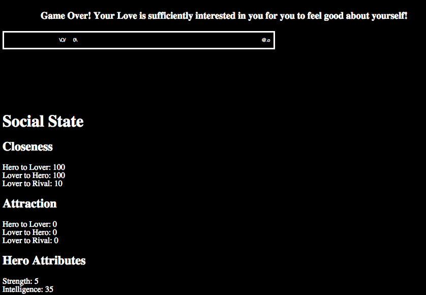

Welcome to part 4 guys! Where it all comes together! The intricate puzzle pieces we've carefully jigsawed will finally snap into place, revealing the glorious picture which is your very first ensemble-based game. Let's get started!
First things first -- let's load up that social schema package we worked so hard on in Part 3! We'll be doing this with a series of calls to ensemble functions that take the .json files of your schema as parameters. First, you'll want to load in your schema file itself (that defines your categories and types), as ensemble will use it to help with the validation of your other files. This should all be in your html file, right after your call to ensemble.init() (reprinted here for convenience). So, something like this:
//Init ensemble
var loadResult = ensemble.init();
console.log(loadResult);
var rawSchema = ensemble.loadFile("data/schema.json");
var schema = ensemble.loadSocialStructure(rawSchema);
And there you go, your schema file is loaded! The path provided to schema.json should be relative to the location of the html file your game lives in. ensemble now understands all of the categories and types that compose the social structure of your game, and consequently will express concern if you load up rules or history that are not aligned with the structure you've defined. And don't worry: even though we're storing the schema in the schema variable, we won't need to use it directly as ensemble now has everything it needs internally, at least with regards to social structure.
What ensemble *doesn't* have is understanding of the cast, rules, actions, and history of your game. Let's take care of that, pronto!
var rawCast = ensemble.loadFile("data/cast.json");
var cast = ensemble.addCharacters(rawCast);
var rawTriggerRules = ensemble.loadFile("data/triggerRules.json");
var triggerRules = ensemble.addRules(rawTriggerRules);
var rawVolitionRules = ensemble.loadFile("data/volitionRules.json");
var volitionRules = ensemble.addRules(rawVolitionRules);
var rawActions = ensemble.loadFile("data/actions.json");
var actions = ensemble.addActions(rawActions);
var rawHistory = ensemble.loadFile("data/history.json");
var history = ensemble.addHistory(rawHistory);
We'll actually be using the cast variable later on, so holding on to that is a good idea!
Next, we'll be setting up some initial game state with a couple of calls to functions that we'll soon be writing in loversAndRivals.js
//Set up our initial state setUpLoversAndRivalsInitialState();
As you may recall, most of our initial state is actually defined in our history file, so we don't have too much 'assigning' of state to do right here. Instead, setUpLoversAndRivalsInitialState will simply take that initial state we've specified in the history file and use it to fill in all those NA values we currently have in our game.
var setUpLoversAndRivalsInitialState = function(){
//update our local copies of these variables, and display them.
updateLocalStateInformation();
displayStateInformation();
};
We see here that this function is just a wrapper for two other functions, updateLocalStateInformation() and displayStateInformation(). Let's take the time to talk about both of these guys for a little bit.
updateLocalStateInformation() asks ensemble several questions about the current social state, and then stores the answers in a local variable for ease of access. The questions it asks are along the lines of "what is the current attraction value from the hero to the love" or "what is the hero's current intelligence value?" The way it asks these questions is by passing in predicate variables into ensemble's "get" function, like so:
var updateLocalStateInformation = function(){
//First, let's grab the data we'll want to display.
var loveToHeroClosenessPred = {
"category" : "feeling",
"type" : "closeness",
"first" : "love",
"second" : "hero"
};
//Get love to hero closeness.
var results = ensemble.get(loveToHeroClosenessPred);
stateInformation.loveToHeroCloseness = results[0].value;
In the above example, we have our predicate, "heroToLoveClosenessPred" -- as with other predicates that we've seen before, it specifies a category ("feeling"), and the specific type within that category ("closeness"), as well as a first and a second. In english, this predicate could be thought to express "what is the value of the love's closeness feeling for the hero?" Once we've formed the predicate, we pass it into ensemble.get. You may be asking "well, wait a second. We've defined other predicates in the past, say inside of history.json, that also had to specify a value. Why is that missing here?" That is an astute observaton, dear reader, and it all ties in with how ensemble.get works.
ensemble.get takes in a predicate, and returns an array of predicates. The predicate it takes in can be a fully specified predicate (i.e., it has category, type, first, second, and value defined), or it can be missing any of those fields. Regardless of how well specified it is, the passed in predicate is checked against the social record (i.e., the current social state, as well as the complete social history of the game) and the function returns a copy of all social record predicates that match the specified fields of the passed in predicate. By default it only looks at the current time step of the social record (i.e., it doesn't look at the history, only the present moment), but additional parameters can be passed in to expres how far back into the history you'd like your search to encompass.
So, here, by passing in this predicate, it will return an array of all predicates that pertain to the love's closeness feelings for the hero, regardless of the value. Fortunately for us, there should only be one such predicate, for as this value changes through gameplay, ensemble doesn't create new entries in the social record, it simply updates existing ones. Thus, we check with confidence the first entry in the array, and since we are interested in the value, that is the field that we check. Finally, we store it in the appropriate field of our stateInformation variable which we created way back when in section 2.
Phew! A lot of information for a small function, but now you know that much more about how ensemble works. The above was just a piece of the updateLocalStateInformation() function, but now that you understand that one part the rest should hopefully be fairly easy to piece together! Here's the whole thing!
var updateLocalStateInformation = function(){
//First, let's grab the data we'll want to display.
var loveToHeroClosenessPred = {
"category" : "feeling",
"type" : "closeness",
"first" : "love",
"second" : "hero"
};
var loveToRivalClosenessPred = {
"category" : "feeling",
"type" : "closeness",
"first" : "love",
"second" : "rival"
};
var heroToLoveClosenessPred = {
"category" : "feeling",
"type" : "closeness",
"first" : "hero",
"second" : "love"
};
var loveToHeroAttractionPred = {
"category" : "feeling",
"type" : "attraction",
"first" : "love",
"second" : "hero"
};
var heroToLoveattractionPred = {
"category" : "feeling",
"type" : "attraction",
"first" : "hero",
"second" : "love"
};
var loveToRivalAttractionPred = {
"category" : "feeling",
"type" : "attraction",
"first" : "love",
"second" : "rival"
};
var heroIntelligencePred = {
"category" : "attribute",
"type" : "intelligence",
"first" : "hero"
};
var heroStrengthPred = {
"category" : "attribute",
"type" : "strength",
"first" : "hero"
};
//Get love to hero closeness.
var results = ensemble.get(loveToHeroClosenessPred);
stateInformation.loveToHeroCloseness = results[0].value;
//Get love to rival closeness
results = ensemble.get(loveToRivalClosenessPred);
stateInformation.loveToRivalCloseness= results[0].value;
//Get hero to Love closeness
results = ensemble.get(heroToLoveClosenessPred);
stateInformation.heroToLoveCloseness = results[0].value;
//get love to hero attraction
results = ensemble.get(loveToHeroAttractionPred);
stateInformation.loveToHeroAttraction = results[0].value;
//get love to rival attraction
results = ensemble.get(loveToRivalAttractionPred);
stateInformation.loveToRivalAttraction = results[0].value;
//get hero to love attraction
results = ensemble.get(heroToLoveattractionPred);
stateInformation.heroToLoveAttraction = results[0].value;
//get hero intelligence.
results = ensemble.get(heroIntelligencePred);
stateInformation.heroIntelligence = results[0].value;
//get hero strength.
results = ensemble.get(heroStrengthPred);
stateInformation.heroStrength = results[0].value;
};
Now that we have all this great information, what are we going to do with it? Well, this is where displayStateInformation() comes into play! Essentially, what this function does is find html elements defined in the html file, and changes their value to whatever was stored inside of ensemble's social record. This funciton is fairly short, so we'll give it to you all at once:
var displayStateInformation = function(){
document.getElementById("closenessHeroToLoverNumber").innerHTML = stateInformation.heroToLoveCloseness;
document.getElementById("closenessLoverToHeroNumber").innerHTML = stateInformation.loveToHeroCloseness;
document.getElementById("closenessLoverToRivalNumber").innerHTML = stateInformation.loveToRivalCloseness;
document.getElementById("attractionHeroToLoverNumber").innerHTML = stateInformation.heroToLoveAttraction;
document.getElementById("attractionLoverToHeroNumber").innerHTML = stateInformation.loveToHeroAttraction;
document.getElementById("attractionLoverToRivalNumber").innerHTML = stateInformation.loveToRivalAttraction;
document.getElementById("heroStrengthNumber").innerHTML = stateInformation.heroStrength;
document.getElementById("heroIntelligenceNumber").innerHTML = stateInformation.heroIntelligence;
};
So, you remember in our html file, we had all of those "NAs"? Well, no more! Now that we have this in place, those place holder values should now be filled in with actual data from ensemble! How exciting!
As a brief aside, we have a small bit of irony here worth pointing out. We're using document.getElementById(ID_OF_ELEMENT) to find our html components here. However, if you haven't heard about jQuery then you should check it our right away (as soon as you'll done with this tutorial, of course!). We're not using it in this project to keep you from only having to learn one new javascript library, BUT as anyone whose used jQuery will testify, using jQuery is actually much simpler than not using it!
But back to ensemble!
If you've been following along at home, then your version of Lovers And Rivals should look a little something like this...
That is to say, not altogether too different from how we last saw it beyond those lovely, georgeous 0s taking the place of the NAs of yesteryear. Next, let's get our three characters to take their proper positions on the field. We'll start by adding a line to our html file just under our call to initializing the game state.
setupCharacterPositions(500);
setupCharacterPositions will place our three characters at different places in the field, so they aren't all standing on top of each other. The 500 we pass in is just a parameter that makes it look nice with the width of the field being what it is. You can adjust it if you like, it doesn't really matter.
The function itself gets defined in the javascript file. We'll break it down here piece by piece.
var setupCharacterPositions = function(widthOfField){
var hero = document.getElementById("hero");
var love = document.getElementById("love");
var rival = document.getElementById("rival");
First thing we do is grab the html component that represents the three characters (i.e., the div tags that house our 0\ and @.o people).
//Get love to hero closeness. var loveToHeroCloseness = stateInformation.loveToHeroCloseness; //Get love to rival closeness var loveToRivalCloseness = stateInformation.loveToRivalCloseness; //Get hero to Love closeness var heroToLoveCloseness = stateInformation.heroToLoveCloseness; //store the width of field information stateInformation.widthOfField = widthOfField;
We then grab some pertinent information from our local stateInformation variable that we've set up, as well as store the passed in 'width of field' parameter for future calculations.
//Actually reposition the characters based on their closeness values. //The love's position is an amalgamation of things. var lovePosition = (widthOfField/2) + loveToRivalCloseness - loveToHeroCloseness; // starts in middle, pulled in both directions.
This game is all about the affections of the love drawing them closer to the rival and the hero, using physical distance to represent the leanings of the love's heart. But to start, we want the love to be right in the middle of the two suitors, thus, we do a little bit of math to find where the love should be standing.
hero.style.left = heroToLoveCloseness + 'px'; love.style.left = lovePosition + "px"; rival.style.left = widthOfField + "px"; // rival never moves. };
Finally, we actually position the characters based on the values we determined; the hero is positioned based solely on their closeness to the love, the love is positioned based on what we just calculated above, and the rival is just plopped on the far right hand side of the field, never moving. If you're totally offput by setting these positions by setting an int and the string 'px' to the left field, well, I'm sorry. You are more than welcome to switch over to using jQuery on your own time.
Ok, great! With that in place, your characters should finally stop standing on top of each other!

Now we're finally ready to get into the main game loop. The main game loop is going to look something like this:
var storedVolitions = ensemble.calculateVolition(cast);
This tiny little line is actually doing quite a bit of heavy lifting. It's taking the current social state and social history (at present, only what you've defined in your history file), and running it against all of the volition rules you wrote back in part 3 to determine what the characters want to do with each other. At this point though, the volitions are *solely* in the form of volitions, such as 'raise strength' and 'increase closeness.' If we want to translate these volitions into actual actions (such as "do pushups" or "invite to movies"), we're gonna have to do a tiny bit more work.
Namely, to get our actions we'll call a function tailored specifically for Lovers and Rivals.
populateActionLists(storedVolitions, cast);populateActionLists, defined in the js file, is actually pretty straightforward, as its just a wrapper function for a few calls to populateActionList (singular)
//Fills in all of the actionList divs with buttons corresponding to the actions the player can take
//by calling individual instances of populateActionList
var populateActionLists = function(storedVolitions, cast){
//populate the action list of hero to love:
populateActionList("hero", "love", storedVolitions, cast);
populateActionList("hero", "rival", storedVolitions, cast);
populateActionList("hero", "hero", storedVolitions, cast);
};
As you can see, for each one of these calls, we pass in two characters, the volitions we calculated, and the cast. We always pass in the hero as the first character because in Lovers and Rivals, all of the actions are done through the hero's perspective (though you could easily make a game where the love or the rival could take actions as well!) Lets take a look at the function that actually populates the action list!
//Fills the actionList div with buttons corresponding to the actions the player can take.
var populateActionList = function(initiator, responder, storedVolitions, cast){
var char1 = initiator;
var char2 = responder;
var possibleActions = ensemble.getActions(char1, char2, storedVolitions, cast, gameVariables.numIntents, gameVariables.numActionsPerIntent);
We see from the parameters of this function that the first character passed in will be the initiator (stored in the local variable char1), and the second character will be the responder. We then figure out the actions that the initiator wants to take towards the responder with a call to ensemble.getActions, the two chars, storedVolitions, and cast arguments should be pretty familiar, but what about those last two parameters? Well, gameVariables is referring to a variable defined at the top of the javascript file. numIntents is refers to the number of distinct intents we want to see actions for, and numActionsPerIntent is the maximum number of actions to return for any given intent.
But just like the seemingly innocent looking ensemble.calculateVolitions, ensemble.getActions has returned an array of everything that the initiator wants to towards the responder, given the constraints of the parameters passed in to the function.
var divName = "actionList_" + char1 + "_" + char2; var actionList = document.getElementById(divName);
Because this function is used for different pairs of characters, we need to do a smidgen of string manipulation in order to get the html element that refers to the proper action list (i.e., is this the div where the hero's actions towards the love will go? Or the hero towards themselves?).
//Let's make a button for each action the hero wants to take!
for(var i = 0; i < possibleActions.length; i += 1){
//Make a new button
var action = possibleActions[i];
//If the character doesn't have a strong volition to do this action,
//don't include it in the action list.
if(action.weight < 0){
continue;
}
var buttonnode= document.createElement('input');
buttonnode.setAttribute('type','button');
buttonnode.setAttribute('name',action);
buttonnode.setAttribute('value',action.displayName);
buttonnode.actionToPerform = action;
buttonnode.cast = cast;
buttonnode.onclick = actionButtonClicked;
actionList.appendChild(buttonnode);
}
So we've figured out our array of actions. Now all that we need do is loop through them and create buttons for them that the user can click on. For each action in possibleActions, we store it in a temporary variable, do a quick check on its weight to make sure that it is positive (and, thus, something that the character actually wants to do towards the responder), and then we actually create the button! The calls to buttonnode.setAttribute is just doing things like identifying it *as* a button, and setting the text of the button itself. But we can also add whatever additional properties we want. As we'll find, it'll actually be pretty convenient for us to add both the cast and the action to the button itself.
We'll also give the button a function for its onclick event: actionButtonClicked. We'll discuss it in depth as soon as we're done with this function, but suffice it to say, its the function that gets called whenever this button gets clicked on. And finally, we add the button that we just made to the actionList div through the call to actionList.appendChild.
//Write a little message if there were no possible actions.
if(actionList.innerHTML === ""){
actionList.innerHTML = "No Actions Available";
}
};
After the for loop, if there weren't any actions available, we'll add a little note saying that there were no available actions for that specific initiator-responder pair.
Okay, I said we'd be taking a look at actionButtonClicked and I wasn't lying to you! This function gets called whenever, surprise surprise, an action button is clicked, and is defined in the javascript file. This function is a bit of a doozy, and makes several calls to other functions, which we'll describe AS we see them.
var actionButtonClicked = function(){
//Clean away all of the other actions -- they made their choice!
clearActionList();
We start by cleaning out the action list. Don't worry, it'll come back eventually! Essentially, all this function is doing is making the whole area of the screen where actions are presented hidden (i.e., making them not show up), and then removing their contents by setting the property of their innerHTML field to the empty string.
var clearActionList = function(){
//We're first going to make the entire action list disappear
var actionArea = document.getElementById("actionArea");
actionArea.style.visibility = "hidden";
//Now we're actually going to remove the actions from the actionLists, because with the new socialState,
//characters will likely want to take new actions towards each other.
var heroToLoveActionList = document.getElementById("actionList_hero_love");
heroToLoveActionList.innerHTML = "";
var heroToRivalActionList = document.getElementById("actionList_hero_rival");
heroToRivalActionList.innerHTML = "";
var heroToHeroActionList = document.getElementById("actionList_hero_hero");
heroToHeroActionList.innerHTML = "";
};
Jumping back to actionButtonClicked -- We also want to change the social state basic on the action that the player selected. This is why we wanted to attach the action to the button itself; for the action has all of the effects (bound with the correct characters) that need to be added to the social record!
//CHANGE THE SOCIAL STATE -- social physics baby!!!
var effects = this.actionToPerform.effects; // should be an array of effects.
for(var i = 0; i < effects.length; i += 1){
ensemble.set(effects[i]);
}
Above, we're simply looping through the effects array (which will be an array of predicates) of the action that was stored in the button ("this", in this context, refers to the button pressed), and passing each effect into ensemble.set. ensemble.set is kind of the sister function of ensemble.get. While ensemble.get returns predicates that represent the current state of the social record, ensemble.set takes a predicate and either adds it to the record as a new social fact, or uses it to update an existing one, as appropriate.
Okay, we're doing well! Moving right along, we'll add this line...
//RUN SOME TRIGGER RULES based on the new state! ensemble.runTriggerRules(this.cast);
So now that we've updated the social state, its time to run our trigger rules! You remember trigger rules, right? They're the guys that check the social record to see if something new should be enacted, like, automatically lowering the closeness of people who engaged in self-involved activity. Well, running them as simple as the above line!
You may be asking yourself, "why do we have to pass the entire cast in each time?" Well, the reason is that you might not *want* to use the entire cast all the time. You can imagine a game that has multiple levels, and only a subset of your entire cast appears on each level. It might not make sense to have characters that are "off stage" forming volition and being affected by trigger rules, so ensemble gives you the ability to specify the cast of characters to use.
Moving on! Let's add a note letting the player know if the action was accepted or rejected.
//Print out if the action was 'accepted' or rejected!
var statusArea = document.getElementById("statusMessage");
var acceptMessage = this.actionToPerform.displayName + " successful!";
if(this.actionToPerform.isAccept !== undefined && this.actionToPerform.isAccept === false){
acceptMessage = this.actionToPerform.displayName + " failed!";
}
statusArea.innerHTML = acceptMessage;
We find ourselves once again wielding our mastery over grabbing html elements by id, here the statusMessage div. Each action has the field "isAccept" defined -- a boolean which if true means that the spirit of the action was accepted by the responder, and false if otherwise. Whether the responder accepts or rejects is determined by the volition rules written, plus any action specific influence rules that might be present. Also, though every action *should* have isAccept defined for clarity, if it is left unspecified ensemble assumes the action to be an 'isAccept' action.
Next, we'll be updating some local state information, as well as moving the characters to their new positions.
//Re-draw the people (maybe even by having them MOVE to their new positions...) //Also re-draw any debug/state informaton we want. updateLocalStateInformation(); displayStateInformation(); moveAllCharacters();Our old friends, updateLocalStateInformation() and displayStateInformation() need no introduction. However, the new addition to the party, moveAllCharacters() deserves a warm welcome. This function is going to handle the totally sweet (if somewhat minimal) animation we have in our game.
var moveAllCharacters = function() {
console.log("inside of moveAllCharacters");
//Takes a little bit of computation!
var loveDestination = (stateInformation.widthOfField/2 - stateInformation.loveToHeroCloseness*1.5 + stateInformation.loveToRivalCloseness*2.5);
moveByCharacterName("hero", stateInformation.heroToLoveCloseness);
moveByCharacterName("love", loveDestination);
};
Okay okay fine, you caught us. We've got another wrapper function here that makes a couple calls to moveByCharacterName(), which I suppose is the real star here. We also do a little bit of math to figure out where the love wants to move, as a function of their current feelings for the hero and for the rival. Diving deeper into moveByCharacterName...
var moveByCharacterName = function(name, destination){
var elem = document.getElementById(name);
var startPos = parseInt(elem.style.left, 10); // start off with their current left position.
var currentPos = startPos;
function frame() {
if(startPos > destination){ // we are moving backwards.
console.log("decrementing...");
currentPos -= 1;
}
else if (startPos < destination){ // we are moving forwards.
currentPos += 1;
console.log("incrementing...");
}
elem.style.left = currentPos + 'px';
if (currentPos == destination) {
clearInterval(id);
}
}
var id = setInterval(frame, 10); // draw every 10ms
};
The basic premise here is very similar to that temporary move function we wrote together back in Part 2. We get the html element representing the character we care about through their name, and figure out their starting position by looking at that element's "left" value. At the bottom of the function, we set up an interval, specifying a function to be called every 10 milleseconds, the "frame" function. The frame function is defined just above the call to setInterval. It essentially checks to see if the character's destination is less than or greater than their current position, and increments or decrements their current position accordingly, ultimately assigning it to their left attribute. Finally, if the currentPos is equal to the destination (i.e., they have reached their destination), then we clear the interval, ending the every-10ms-call to the frame function.
How you holding up? We're gonna jump back to actionButtonClicked() to finish it up, and then we'll be able to come back up for air, I promise.
//set up next turn.
var event = document.createEvent('Event');
event.initEvent('nextTurn', true, true);
document.dispatchEvent(event);
};
The final thing we do in this function is create a new event object, which we call 'nextTurn', and dispatch it. This will allow other parts of the html document to understand that ensemble has finished updating the social record, running trigger rules, and animating the characters. We'll take a look at this in just a minute, but first, lets check out a couple of screen shots of how your game should be looking.

When you first load up the game, it should look like the above, with a collection of lovely actions for you to select from! And if you were to, say, select "study math" then you should be greeted by something that looks like this...

The hero should stay in place because they holed up in their room studying math, and the love, disappointed by the hero's self-involved behavior, will have moved closer to the rival (thanks to one of our trigger rules!). The status area should also have updated, letting us know that our attempts to study math were a rousing success! Good for us! Plus, if you scroll down your game a little, you'll see that all that studying has really paid off, increasing our hero's intelligence!
We've made great progress, but we're not done yet! For one thing, after selecting that single action, no more actions pop up for us to pick! This means that the hero's quest to win the affections is all for naught, unless.... unless... we give the hero the ability to take additional turns! And this is where that event we launched back in actionButtonClicked comes into play!
To take advantage of the dispatched event, add this line to your html file under your call to populateActionLists():
document.addEventListener("nextTurn", nextTurn);
Pretty easy, huh! All this is saying is that when we hear the "nextTurn" event (which you'll remember is the name we gave the custom event we dispatched), then we should call the nextTurn() function, which we haven't actually defined yet. So let's define it now! And let us define this function in our html file, just above our added event listener.
var nextTurn = function(){
gameVariables.turnNumber += 1;
checkForEndConditions();
if(gameVariables.gameOver === true){
var endMessageArea = document.getElementById("statusMessage");
endMessageArea.innerHTML = gameVariables.endingText;
}
The first thing we do is increment the turnNumber stored in our gameVariables array. We then call checkForEndConditions(), which checks to see if the game should be over; if so, we update the statusMessage to have the appropriate game over text (either "you win!" or "you lose!" as appropriate) Taking a brief aside to look at what is inside of checkForEndConditions, we see we have...
//Checks to see if the game is over!
var checkForEndConditions = function(){
if(stateInformation.loveToRivalCloseness >= 90){
//uh oh, we lose!
gameVariables.gameOver = true;
gameVariables.endingText = "Game Over! Your Love is in the arms of your Rival!";
}
if(stateInformation.loveToHeroCloseness >= 90 && stateInformation.heroToLoveCloseness >= 90){
gameVariables.gameOver = true;
gameVariables.endingText = "Game Over! Your Love is sufficiently interested in you for you to feel good about yourself!";
}
};
All this function does is checks to see the love's closeness value to the rival -- if 90 or greater, then you lose, the love loves the rival too much for you to ever have a chance! Conversely, if the love's closeness to the hero is 90 or more, AND the hero's closeness to the love is ALSO 90 or more, well, that's a whole 'nother story--in that case you win! Hooray!
We return to your regularly scheduled nextTurn(), already in progress.
else{
ensemble.setupNextTimeStep();
storedVolitions = ensemble.calculateVolition(cast);
populateActionLists(storedVolitions, cast);
cleanUpUIForNewTurn();
}
};
We get inside of this else block if the game's ending conditions have not yet been met. The first thing we do is make a call to ensemble.setupNextTimeStep() -- this let's ensemble know that we're moving forward in time by advancing a step forward in the social record. This current time step is up for modification through future actions and trigger rules, but the results of the previous turn (namely that the hero's intelligence went up a little, and that the love's closeness for the rival increased) are etched into the social record as having happened at time step 0. Those same values can (and likely will) change at time step 1, 2, 3, etc., but turn 0 is in the past and untouchable!
ensemble.calculateVolition and populateActionLists are more old friends come back again; We re-calculate the volitions of the characters now that the social state has changed (e.g., now that the hero is more intelligent, maybe there are new, different things that they want to do!). Once the new volitions are formed, populateActionLists takes those volitions and translates them into the buttons that the player can click on to perform an action!
And last, but certainly not least, we call cleanUpUIForNewTurn() We'll define this bad boy back in our javascript file.
var cleanUpUIForNewTurn = function(){
var actionArea = document.getElementById("actionArea");
actionArea.style.visibility = "visible";
var turnNumberArea = document.getElementById("turnNumberPlace");
turnNumberArea.innerHTML = gameVariables.turnNumber;
};
All we're doing here is making the action buttons visible again (we hid them earlier), and updating the turn number in the UI.
And with that, we're done! Try playing the game you just created and see if you can win the heart of your love!

We hope you enjoyed this tutorial! You should now have everything you need to start making ensemble games of your very own! We admit, it took a little bit of work to set everything up for this simple (though no less awesome for its simplicity) game. BUT, now that you have everything in place, adding new rules, actions, and social considerations is a snap! Lovers and Rivals already has smidges of procedural rhetoric embedded in it (studying anatomy is purely better than studying math in this game, for example! People want to be kissed after you write them a few love notes!), but you could alter it to purport a world view that you actually believe in.
In short, though using ensemble takes a bit of ramping up, we believe that it facilitates the creation of gameplay experiences untenable to create through other means. So please, let your imagination run rampant and create works of social-based gameplay hithertofore unseen! We know you can do it!
I mean, heck, if a \o/ can find true love, then anything is possible!